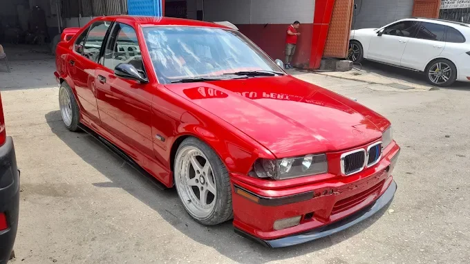

Öncesi
Öncesi Sonrası
SonrasıAğır Kaporta Onarımı
Değişim olmadan orijinal parça kurtarma ve Fırınlı boya.
 Öncesi
Öncesi Sonrası
SonrasıLokal Çizik Onarımı
Renk geçişsiz lokal yama boyası uygulaması.
 Öncesi
Öncesi
SonrasıGüneş Yanığı Tamiri
UV filtreli özel vernik yenileme işlemi.
.webp) Öncesi
Öncesi.webp) Sonrası
SonrasıÇamurluk Göçük Düzeltme
Şase podyesi korunarak yapılan kaporta ve boya işlemi.
 Aşaması
Aşaması Sonucu
Sonucu1957 Chevrolet Bel Air
Komple kumlama, epoksi astar ve Fırınlı klasik restorasyon.

Ticari Araç Toplama
Ağır hasarlı VIP minibüsün kaporta şase ve komple boya işlemi.
Lüks Segment Boya
BMW kaput ve tavanında orijinal renk kodlu %100 uyumlu boyama.

Tampon ve Plastik Onarımı
Esnek astar uygulanarak yapılan ömürlük tampon boyası.
SIRADAKİ PROJE ARACINIZ OLSUN
Mükemmeliyetçi işçiliğimizle tanışmak ve aracınız için fiyat almak için fotoğraf gönderin.